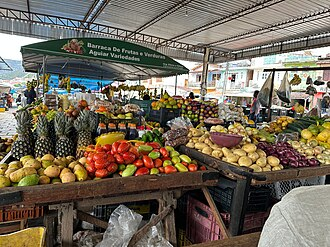

Sobre a AgroFeira
A AgroFeira é uma iniciativa que promove a comercialização de produtos agrícolas frescos e de qualidade, valorizando o trabalho local.

Produtos
- Mandioca — saca de 60 kg
- Banana-prata — cacho
- Açaí — rasa
- Pimenta-do-reino — quilo
- Cupuaçu — quilo
- Alface — maço
Os preços dos produtos mudam semanalmente.